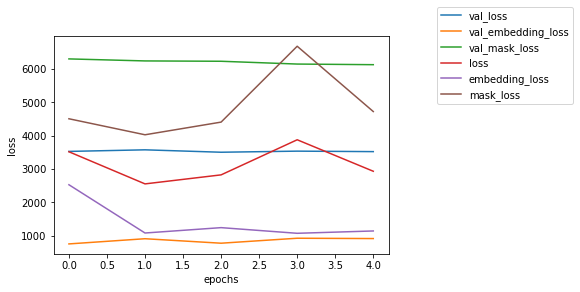

Training¶
Building and compiling a model¶
[1]:
%%capture
from librosa.core import time_to_frames
from chimeranet.model import ChimeraNetModel
time, sr, hop_length, n_mels = 0.75, 16000, 128, 96
T, F, C, D = time_to_frames(time, sr, hop_length), n_mels, 2, 20
cm = ChimeraNetModel(T, F, C, D)
# build_model returns Keras' Model object
model = cm.build_model(n_blstm_units=50, n_blstm_layers=2)
model.compile(
'rmsprop',
loss={
'embedding': cm.loss_deepclustering(),
'mask': cm.loss_mask()
},
loss_weights={
'embedding': 0.5,
'mask': 0.5
}
)
Training a model¶
[2]:
%%capture
import h5py
# load data first
y_train, y_validation = dict(), dict()
with h5py.File('example-dataset.h5') as f:
x_train = f['x_train'][()]
y_train['embedding'] = f['y_train_embedding'][()]
y_train['mask'] = f['y_train_mask'][()]
x_validation = f['x_validation'][()]
y_validation['embedding'] = f['y_validation_embedding'][()]
y_validation['mask'] = f['y_validation_mask'][()]
# train model by model.fit function
history = model.fit(
x=x_train,
y=y_train,
validation_data=(x_validation, y_validation),
batch_size=4,
epochs=5
)
# finally, save the model
model.save('example-model.h5')
Training an existing model¶
Since ChimeraNet uses custom loss function, CustomObjectScope is necessary.
Currently, ChimeraNetModel wraps partial thing of keras' model.
This procedure might be wrapped on future release.
[3]:
%%capture
from keras.models import load_model
from keras.utils import CustomObjectScope
with CustomObjectScope({
'_loss_deepclustering': cm.loss_deepclustering(),
'_loss_mask': cm.loss_mask(),
}):
model = load_model('example-model.h5')
model.fit(
x=x_train,
y=y_train,
validation_data=(x_validation, y_validation),
batch_size=1,
initial_epoch=3,
epochs=3+1
)
On learning curve¶
Also, you can plot learning curve. for more information, see keras documentation
[4]:
%matplotlib inline
import matplotlib.pyplot as plt
for k, v in history.history.items():
plt.plot(v, label=k)
plt.xlabel('epochs')
plt.ylabel('loss')
plt.legend(bbox_to_anchor=(1, 1), bbox_transform=plt.gcf().transFigure)
[4]:
<matplotlib.legend.Legend at 0x1d40c5d748>
